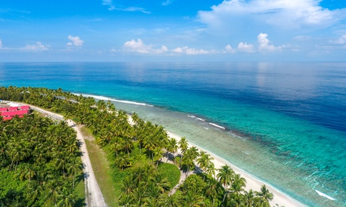

The Top Beach Destinations in the World

Bay of Bahia
Nestled on the northern end of the Isle of Caludge, this beach is cited as the most popular getaway for vacationers during peak summer months. Popular activities include scuba diving, snorkeling, and bird watching.

Selange Beach
Selange Beach is known for its temperate sand. Made up of ground coral due to thousands of years of tectonic activity, the sand is always cool to the touch, despite the heat. The western portion includes fantastic flora and fauna and many pre-Columbian ruins.

Hunt Lagoon
Known primarily for it's hidden location on Kamar Island (which includes swimming through an underground cave), Hunt Lagoon offers a peaceful respite from the tourist-laden locations found throughout Kamar. If possible, make a visit at night – it's bioluminescent lagoon is like viewing fireworks in the water!